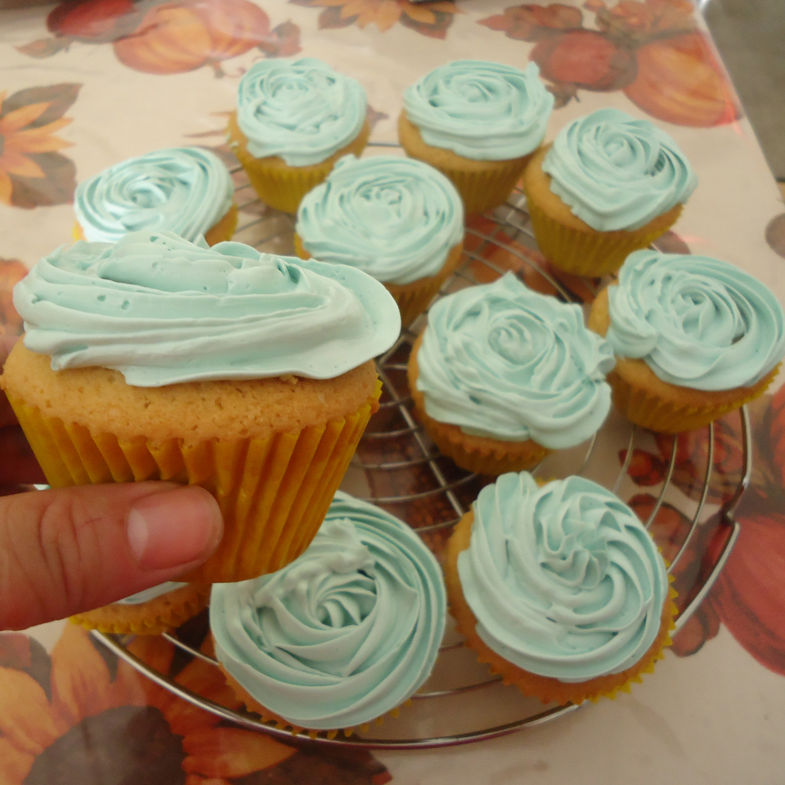
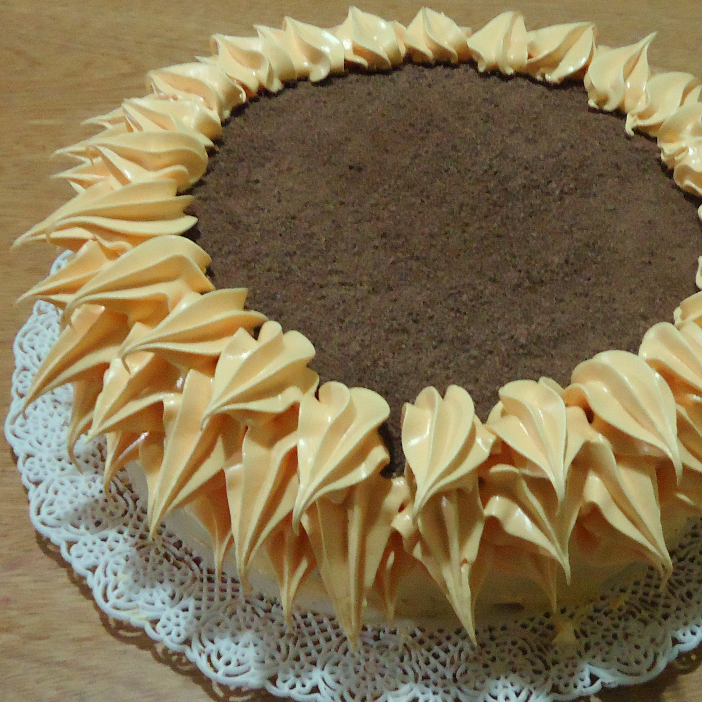
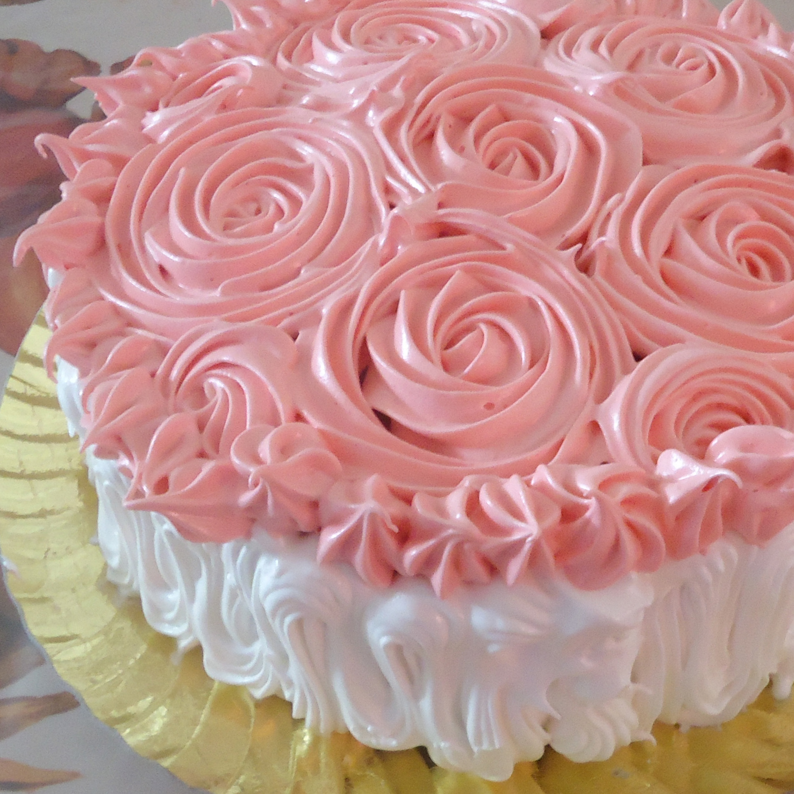

DATOS PERSONALES
| NACIMIENTO | Santa Fe, 20/7/1980 | EDAD | 42 |
| DOMICILIO | Córdoba, Argentina | NACIONALIDAD | Francesa y Argentina |
| TELÉFONO | (+54) 342 4687598 |
EXPERIENCIA LABORAL
| PASTELERA 2020 - "Dulces Caprichos Café" | Desempeño como chef principal y gestión directiva del negocio. Desarrollo de nuevos productos y control de calidad. |
| PROFESORA DE PASTELERÍA 2019 - "Instituto Provincial de Panadería RyG" | Docente de materias técnicas (pastelería, panadería y decoración de tortas) en nivel terciario. |
| REPOSTERA 2015-2019 - "La pastelería de Gladis" | Decoración de tortas, elaboración de postres y bollería dulce. |
| PANADERA Y REPOSTERA 2013-2015 - "Nuevo Sol Panadería" | Elaboración de productos de panadería, tortas y tartas dulces. |
PORTFOLIO DE TRABAJOS EN PASTELERÍA
  